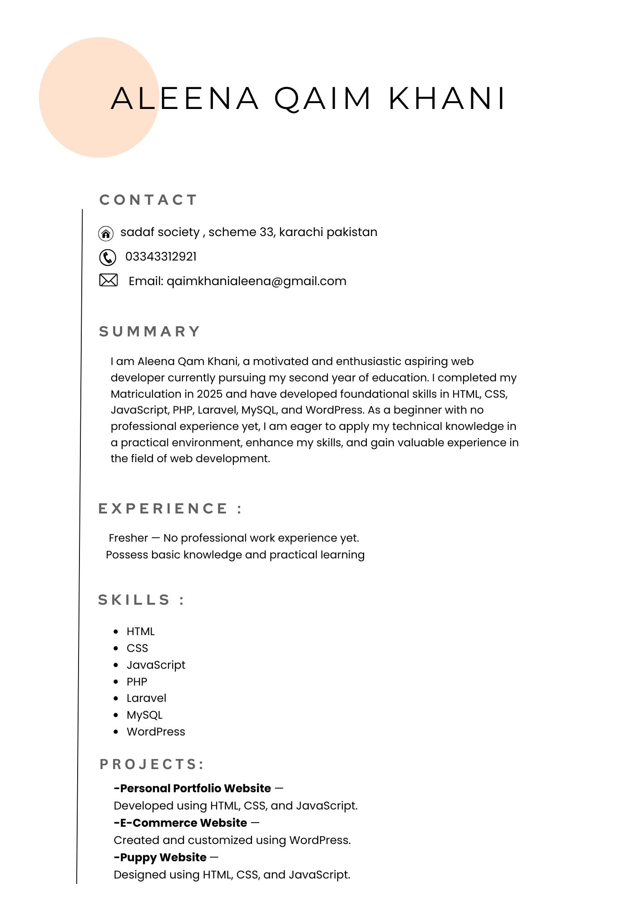

Hi, I’m Aleena, a passionate Full-Stack Web Developer and a fresh professional with hands-on experience in both frontend and backend web development. I focus on converting complex ideas into clean, efficient, and user-friendly digital experiences.
I have learned and worked with technologies including HTML5, CSS3, JavaScript, PHP, Laravel, MySQL, WordPress, Bootstrap, Git, and GitHub. I enjoy building responsive, user-friendly, and functional websites with clean and organized code.
My experience includes developing dynamic PHP-based websites, working with databases, implementing backend functionality, and creating responsive interfaces that provide a smooth user experience.
Matriculation — SM public school
Completed in 2025
Self-taught web development, working through structured online courses and building real projects along the way.
As a fresher, I’m looking forward to joining a professional environment where I can learn from experienced developers, contribute to meaningful projects, and develop innovative, secure, and user-friendly web solutions.

Take a look at my full resume, including education, skills, and experience.